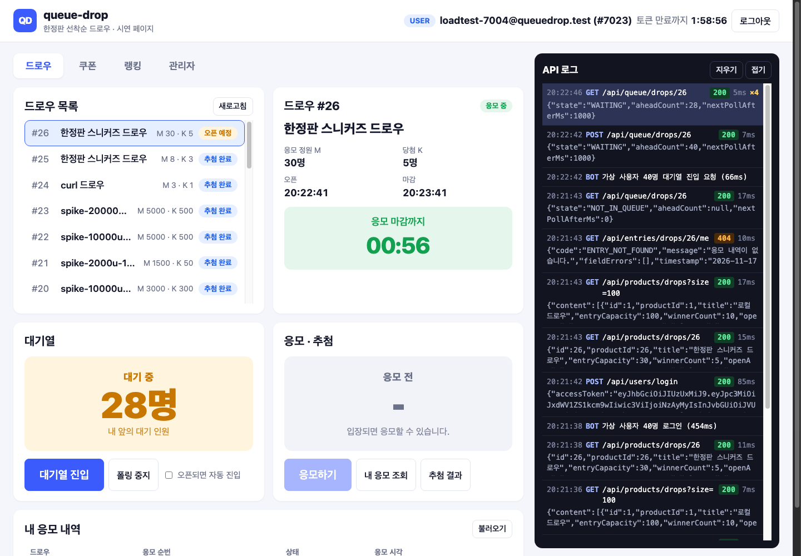
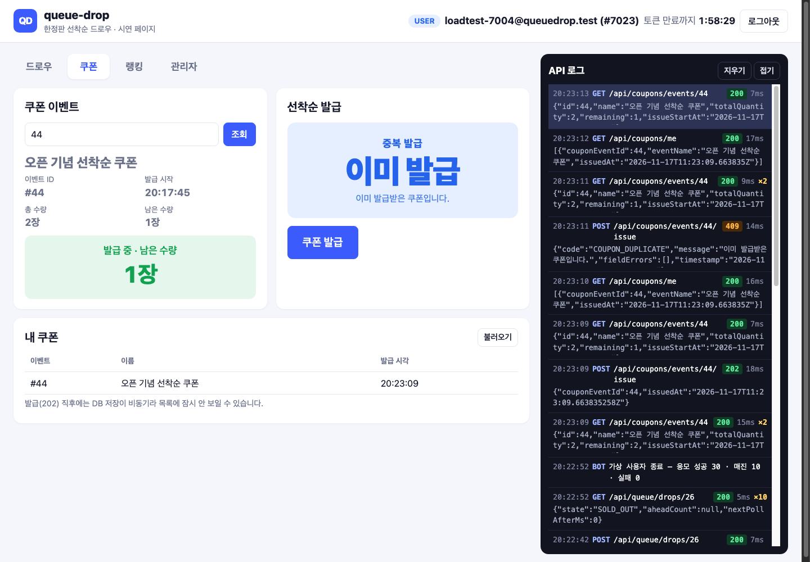

대기열 → 선착순 응모(정원 M) → 마감 시각 자동 추첨(K명)으로 이어지는 드로우 흐름과, 대기열 없는 선착순 쿠폰 발급, 응모 이벤트 기반 랭킹을 마이크로서비스 7개로 구현하고 부하 테스트로 정원·수량 초과 0, 중복 0 을 확인한 결과를 정리한다.
| 문서 | 제출용 종합 결과보고서 |
|---|---|
| 작성일 | 2026-11-17 |
| 작성자 |
queue-drop 은 한정판 상품을 먼저 온 순서대로 응모 자격을 주고, 응모자 중에서 추첨하는 서비스다. 오픈 순간 사람이 몰리면 대기열을 세워 조금씩 입장시키고, 정해진 인원(정원 M)이 차면 응모를 마감한다. 마감 시각이 되면 자동으로 당첨자 K명을 뽑는다. 결제는 없다.
| 관점 | 해결하려는 문제 |
|---|---|
| 사용자 | 오픈 순간 트래픽 폭주 속에서도 먼저 온 사람이 먼저 기회를 얻는 공정성 |
| 비즈니스 | 응모 정원·쿠폰 수량을 절대 초과하지 않는 정합성 (오버 응모 / 오버 발급 방지) |
| 시스템 | 짧은 순간 집중되는 쓰기 요청을 흡수하면서 여러 서비스에 걸쳐 상태 일관성 유지 |
핵심 기능은 대기열, 선착순 쿠폰 발행, 랭킹 세 가지이며, 이를 잇는 선착순 응모와 마감 자동 추첨이 드로우 흐름의 중심이다.
flowchart LR
A[드로우 오픈] --> B[대기열 진입]
B --> C{입장 토큰}
C -- 대기 --> B
C -- 발급 --> D[선착순 응모
정원 M]
D -- 정원 소진 --> E[응모 마감]
D -- 성공 --> F[응모 완료]
F --> G[마감 시각]
E --> G
G --> H[자동 추첨 K명]
H --> I[당첨 / 낙첨 조회]
F -. 이벤트 .-> R[랭킹 반영]
| 구분 | 내용 |
|---|---|
| 비기능 목표 | NFR-01 정원·수량은 동시 요청에서도 절대 초과되지 않는다 / NFR-02 중복 응모·중복 발급이 없다 / NFR-03 Redis·Kafka·DB 간 불일치는 복구 가능해야 한다 / NFR-04 추첨은 공정하고 재현·검증 가능해야 한다 |
| 범위 밖 | 결제, 배송, 구매 확정 / 당첨 후 별도 "구매 신청" 단계 (응모 = 신청) / 쿠폰 사용처 (발급·보유 조회까지만) |
| 액터 | 사용자(회원가입·로그인, 대기열 진입, 응모, 쿠폰 발급, 랭킹 조회), 관리자(상품·드로우·쿠폰 이벤트 등록), 스케줄러(입장 처리, 마감 자동 추첨) |
| 영역 (서비스) | ID | 요구사항 |
|---|---|---|
| 회원 (user) | REQ-USER-01~04 | 회원가입, 로그인 시 JWT 발급, Gateway 에서 JWT 검증 후 userId 헤더 전달, 관리자 계정은 기동 시 환경변수로 생성 |
| 상품·드로우 (product) | REQ-DROP-01~03 | 상품 등록, 드로우 등록(정원 M, 당첨 수 K, 오픈·마감 시각, M ≥ K), 목록·상세 조회 |
| 대기열 (queue) — 핵심 ① | REQ-QUEUE-01~06 | 드로우별 대기열, 진입 순 순번, "내 앞에 N명" 조회, 주기적(1초)으로 앞에서 N명에게 입장 토큰 발급, 토큰 TTL(5분), 응모는 유효 토큰 필요 |
| 응모·추첨 (entry) | REQ-ENTRY-01~06 | 토큰으로 응모, 선착순 M명, 1인 1드로우 1응모, 취소 불가, 마감 시각에 K명 자동 무작위 추첨, 결과 조회 |
| 선착순 쿠폰 (coupon) — 핵심 ② | REQ-COUPON-01~05 | 쿠폰 이벤트 등록(총 수량, 시작 시각), 총 수량까지 선착순 발급, 1인 1매, 보유 조회, 대기열 없음 |
| 랭킹 (ranking) — 핵심 ③ | REQ-RANK-01~03 | 인기 드로우 랭킹(응모 수), 유저 활동 랭킹(주간·누적, 응모 1회 = 1점), 응모 이벤트 비동기 소비 |
flowchart LR
U((사용자/관리자)) --> GW[Gateway
JWT 검증]
GW --> US[user-service]
GW --> PS[product-service]
GW --> QS[queue-service]
GW --> ES[entry-service]
GW --> CS[coupon-service]
GW --> RS[ranking-service]
subgraph Redis
RQ[(queue:*)]
RE[(entry:*)]
RC[(coupon:*)]
RR[(rank:*)]
end
QS -- write --> RQ
ES -- read token --> RQ
ES -- write --> RE
QS -- read remaining --> RE
CS -- write --> RC
RS -- write --> RR
US == user.registered ==> K[(Kafka)]
PS == drop.created ==> K
ES == entry.created ==> K
ES == draw.completed ==> K
CS == coupon.issued ==> K
K ==> QS & ES & RS & PS & CS
| 서비스 | 포트 | 데이터 주인 | 저장소 | 핵심 책임 |
|---|---|---|---|---|
| gateway | 8080 | - | - | 라우팅, JWT 검증, X-User-Id/X-User-Role 헤더 주입 (클라이언트가 보낸 X-User-* 는 항상 제거) |
| user-service | 8081 | 회원 | user_db | 회원가입, 로그인(JWT 발급), 관리자 계정 시드 |
| product-service | 8082 | 상품, 드로우 | product_db | 상품·드로우 등록/조회, drop.created 발행 |
| queue-service | 8083 | 대기열, 입장 토큰 | Redis | 대기열 진입·순번, 주기적 입장 처리 |
| entry-service | 8085 | 응모, 추첨 결과 | entry_db, Redis | 선착순 응모 판정, 응모 저장, 마감 자동 추첨 |
| coupon-service | 8084 | 쿠폰 이벤트, 발급 쿠폰 | coupon_db, Redis | 선착순 쿠폰 발급 |
| ranking-service | 8086 | 랭킹 집계 | Redis | 이벤트 소비 → 인기 드로우 / 유저 활동 랭킹 |
DB 는 서비스별로 분리했다(user_db, product_db, entry_db, coupon_db). 로컬 리소스를 아끼기 위해 PostgreSQL 인스턴스 하나에 DB 4개를 두었고, 스키마는 Flyway 로 관리하며 ddl-auto: validate 로 검증한다.
주요 테이블은 user_db users, product_db products·drops, entry_db drop_snapshots·entries·draw_results, coupon_db coupon_events·issued_coupons 이다.
queue·ranking 은 DB 없이 Redis 만 쓴다.
| 토픽 | 발행 | 소비 | 페이로드 | 파티션 키 |
|---|---|---|---|---|
user.registered | user | ranking | userId, nickname | userId |
drop.created | product | entry, queue, ranking | dropId, productId, title, entryCapacity, winnerCount, openAt, closeAt | dropId |
entry.created | entry | entry(저장), ranking | eventId, dropId, userId, entrySeq, appliedAt | dropId:userId |
draw.completed | entry | product | dropId, applicantCount, winnerCount, drawnAt | dropId |
coupon.issued | coupon | coupon(저장) | eventId, couponEventId, userId, issuedAt | couponEventId:userId |
{topic}.DLT 로 보내고, Redis 만 쓰는 컨슈머(queue, ranking)는 3회 재시도 후 로그를 남기고 건너뛴다. 메시지 불변식 위반은 재시도 없이 WARN 로그 후 건너뛴다.auto.create.topics.enable=false) 기동 시 kafka-init 이 파티션 수를 지정해 미리 만든다. entry.created·coupon.issued 는 파티션 6, 나머지는 1. DLT 는 원본과 같은 파티션 수로 만든다.| 구분 | 기술 | 버전 |
|---|---|---|
| 언어 | Java | 21 |
| 프레임워크 | Spring Boot / Spring Cloud | 4.1.2 / 2025.1.4 |
| 빌드 | Gradle 멀티모듈 (wrapper) | 9.8.2 |
| DB | PostgreSQL (서비스별 DB, Flyway) | 17 |
| 캐시·선착순 판정 | Redis (AOF appendonly yes, appendfsync everysec) | 7.4 |
| 메시지 브로커 | Apache Kafka (KRaft, Zookeeper 없음) | 4.0 |
| 컨테이너 | Docker Compose | - |
Gradle 모듈은 gateway, user-service, product-service, queue-service, entry-service, coupon-service, ranking-service, common(이벤트 계약·에러 계약·ArchUnit 규칙 test fixtures) 이다.
| compose 명령 | 뜨는 것 |
|---|---|
docker compose up -d | 인프라만 (PostgreSQL, Redis, Kafka, Kafka UI :8090, kafka-init) — IDE 개발용 |
docker compose --profile app up -d --build | 인프라 + 서비스 7개 (gateway 만 외부 포트 노출) |
docker compose --profile monitoring up -d | Prometheus + Grafana (:3000) |
docker compose --profile loadtest run --rm k6 ... | k6 부하 테스트 (측정은 호스트 k6 로 수행, 7.1 참고) |
Kafka producer 는 acks=all, enable.idempotence=true, retries=MAX, request.timeout.ms=1000, delivery.timeout.ms=3000, max.block.ms=1000 으로 두어 send 결과가 3초 안에 확정되게 했다(애플리케이션 재시도 없음, D2).
내부 서비스 포트는 docker 네트워크 안에만 노출해 헤더 신뢰 기반 인증의 우회를 막는다.
sequenceDiagram
actor A as 관리자
actor U as 사용자
participant PS as product
participant QS as queue
participant ES as entry
participant RS as ranking
A->>PS: ① 드로우 등록
PS-)QS: drop.created
PS-)ES: drop.created
U->>QS: ② 대기열 진입
QS-->>U: 입장 토큰 발급
U->>ES: ③ 응모
ES-->>U: 응모 완료
ES-)RS: entry.created → 랭킹 +1
Note over ES: ④ 마감 시각
ES->>ES: 추첨
ES-)PS: draw.completed
U->>ES: ⑤ 결과 조회
ES-->>U: 당첨 / 낙첨
사용자가 응답을 기다리는 동기 구간은 ②의 진입·폴링, ③의 Lua 판정 + Kafka ack, ⑤의 조회뿐이다. DB 쓰기(③ 저장, ④ 추첨)와 랭킹 집계는 모두 사용자 응답 밖에서 일어난다.
enqueue.lua 하나로 원자 처리한다. 토큰 보유 확인 → 대기 여부 확인 → INCR queue:{dropId}:seq → ZADD NX waiting seq userId. 이미 WAITING/ADMITTED 면 현재 상태를 그대로 돌려준다(멱등, 새로고침해도 순번 유지). 순번은 타임스탬프 대신 카운터로 발급해 동점과 서버 간 시계 차이를 없앴다.admit.lua 로 잔여 정원 확인(없거나 ≤ 0 이면 중단) → ZPOPMIN waiting N → 각 사용자에게 SET token EX 300. 대기열에서 빠졌는데 토큰이 없는 상태가 생기지 않는다.SET queue:admission:gate NX PX (0.9 × 주기) 를 잡고 해제하지 않아 전역에서 주기당 1회만 실행된다. 대상 드로우는 인덱스 ZSet queue:active-drops 에서 조회하고 KEYS/SCAN 은 쓰지 않는다.nextPollAfterMs(1/3/5초)로 클라이언트 폴링 간격을 조절한다.응모 요청마다 판정 전에 요청 ID(eventId, UUID)를 만들고, 응모 Lua 가 아래 순서로 한 번에 판정한다.
| 순서 | 검사 | 실패 시 결과 |
|---|---|---|
| 1 | meta 존재, state == OPEN 그리고 openAt ≤ now < closeAt | CLOSED |
| 2 | EXISTS queue:{dropId}:token:{userId} (queue 소유 키를 읽기만 함) | NO_TOKEN |
| 3 | SISMEMBER applicants userId == 0 | DUPLICATE |
| 4 | GET remaining > 0 | SOLD_OUT |
| 5 | DECR remaining, SADD applicants, HSET requests userId eventId | — |
| 6 | entrySeq = INCR entry:{dropId}:seq 반환 (보상 시에도 되돌리지 않는 별도 카운터) | OK(entrySeq) |
판정이 OK 면 entry.created 를 동기 발행하고 브로커 수신 확인(acks=all)을 받은 뒤 202 Accepted 로 응답한다. DB 저장은 같은 서비스의 저장 컨슈머가 비동기로 한다. 발행 실패 시의 보상과 저장 확정은 4.3 에서 다룬다.
sequenceDiagram
actor U as 사용자
participant ES as entry-service
participant R as Redis
participant K as Kafka
participant EDB as entry_db
U->>ES: POST /api/entries/drops/{id}
Note over ES: eventId(UUID) 생성 — 판정 전
ES->>R: 응모 Lua: 마감·토큰·중복·잔여 검사
+ DECR + SADD + HSET requests
R-->>ES: OK(entrySeq)
ES->>K: entry.created(eventId) — get(3.5s)
alt 수신 확인
ES-->>U: 202 {entrySeq}
K->>ES: 저장 컨슈머 → claim.lua (SADD persisted)
ES->>EDB: INSERT ... ON CONFLICT DO NOTHING
else 발행 실패 / 3.5초 초과
ES->>R: compensate.lua(userId, eventId)
alt ALREADY_PERSISTED
ES-->>U: 202 {entrySeq} (이미 기록됨)
else COMPENSATED / NOT_OURS
ES-->>U: 503 다시 시도해 주세요
end
end
UPDATE drop_snapshots SET status='CLOSING' WHERE status='OPEN' AND close_at <= now. 영향 행 1 인 인스턴스만 추첨을 맡는다. 동시에 Redis meta 를 CLOSED 로 바꿔 이후 응모 Lua 가 거부한다.SCARD applicants(Redis) == COUNT(entries)(DB). 불일치면 다음 주기(5초)에 재확인한다.CLOSING → DRAWN 조건부 UPDATE 로 행 잠금을 잡아 중복 추첨을 막는다. 응모자를 entry_seq 순으로 정렬하고, SecureRandom 시드로 Collections.shuffle(list, new Random(seed)) 후 앞 min(K, 응모자 수) 명을 WON, 나머지를 LOST 로 벌크 UPDATE 한다. 시드는 draw_results 에 저장한다.draw.completed 발행. 실패하면 published=false 로 남아 다음 주기에 재발행한다. product 가 드로우 상태를 DRAWN 으로 반영한다.건수 불일치가 길어지면 경고 후 관리자 수동 추첨(POST /api/entries/admin/drops/{dropId}/draw, DB 응모 기준)으로 확정한다(사용자 결정). 추첨 뒤 늦게 저장되는 응모는 LOST 로 저장된다(4.4 D6).
응모와 같은 판정 패턴을 쓴다. 차이는 토큰 검사 대신 시작 시각 검사가 들어가고 대기열이 없다는 점이다. 발급 Lua 는 meta 존재(NOT_FOUND) → now ≥ issueStartAt(NOT_STARTED) → 중복(DUPLICATE) → 잔여(SOLD_OUT) → DECR·SADD issued·HSET requests 순서로 판정한다.
발행 확인·보상 3결과·claim 저장 확정은 응모와 같다. 쿠폰에는 추첨의 건수 비교 같은 사후 안전장치가 없으므로, 저장 확정(claim)이 없으면 유령 이벤트가 곧 초과 발급이 된다. 그래서 쿠폰에도 같은 처리를 필수로 적용했다.
쿠폰 이벤트 등록은 같은 서비스 안이라 Kafka 를 거치지 않고 커밋 후 Redis 를 직접 초기화한다(SET remaining NX). 초기화 실패는 관리자 재초기화 API 로 복구한다.
entry.created 를 소비해 rank.lua 하나로 원자 실행한다: SADD rank:dedupe:{dropId} userId 가 1 일 때만 rank:drop:popular, rank:user:weekly:{yyyy-Www}, rank:user:all 에 ZINCRBY 1. 같은 이벤트가 두 번 와도 한 번만 센다.appliedAt(ISO 주차, Asia/Seoul)으로 계산한다. 주간 키는 TTL 35일로 두어 리셋 배치가 필요 없다.ZREM). 동점은 ZSet 기본 동작(member 사전순)이며 순번은 1, 2, … 로 매긴다. 두 정책 모두 사용자 결정이다.entry.created 보존 30일).이 장은 보고서의 핵심이다. 정원·수량 초과 금지(NFR-01), 중복 금지(NFR-02), 저장소 간 불일치 복구(NFR-03), 추첨 공정성(NFR-04)을 여러 서비스에 걸쳐 어떻게 지키는지 결정 기록(concurrency-consistency.md)을 요약한다. 기능 설계(응모, 쿠폰, 추첨, 대기열)는 모두 이 결정을 전제로 한다.
| 결정 | 문제 | 선택 | 포기한 대안 | 트레이드오프 |
|---|---|---|---|---|
| D1 선착순 판정 위치 / 진실의 원천 | 피크 순간 정원·중복 판정을 원자적으로, 빠르게 해야 한다 | Redis Lua 원자 판정 + Kafka 비동기 DB 저장. DB 는 UNIQUE(drop_id, user_id) 로 최종 방어선 |
Redis 판정 + DB 동기 저장, DB 락 판정 | (+) DB 락 경합 없음, 응답 지연에 DB 쓰기 미포함 (−) Redis 성공 ↔ DB 기록 사이 시간차·유실 가능성(D2·D6 로 보완), Redis 재시작 시 판정 상태 유실 위험(AOF 로 보완), 도메인 규칙이 Lua 에 위치 |
| D2 Kafka 발행 실패 시 | "성공" 응답한 응모가 DB 에 남지 않거나, 실패 응답한 응모가 DB 에 남으면 안 된다 | 동기 발행 확인(producer 내부 멱등 재시도, 3초 제한) → 실패 시 요청 ID 기준 Redis 보상 후 503. 저장 전 claim Lua 로 저장 확정. 보상과 claim 이 Redis 에서 원자적으로 경합 | 보정 배치(Reconciliation), 애플리케이션 재시도, 추첨 전 집합 대조 | (+) 불변식 "성공 응답 = Kafka 기록" 유지, 유령 이벤트 두 순서 모두 정합 (−) 응답 경로에 Kafka ack 대기(최대 3.5초), Redis 키 2개( requests, persisted) 추가, 보상 실패 시 정원 한 자리가 새는 언더 응모 |
| D3 입장 토큰 검증 | 응모 시점에 대기열 통과 여부를 피크 부하에서도 확인해야 한다 | entry 가 공유 Redis 를 응모 Lua 안에서 직접 조회 (EXISTS token) |
queue REST 호출, 서명 토큰(JWT) | (+) 서비스 간 동기 호출 없음, 토큰 확인이 판정과 원자적으로 묶임 (−) 저장소 공유 → 키 네임스페이스별 쓰기 소유자를 문서로 고정해 완화 |
| D4 드로우 정보 전파 | entry·queue·ranking 이 드로우 정보(정원, 시각, 제목)를 알아야 한다 | Kafka drop.created 로 복제. 발행 어댑터가 afterCommit 에 발행 등록 + 관리자 재발행 API |
필요 시 REST 조회, Outbox | (+) 런타임 서비스 간 호출 없음, 롤백 시 미발행 (−) 커밋 후 발행 실패(이중 쓰기) 시 드로우는 있는데 응모 불가 → 저빈도 관리자 작업이라 재발행 API 로 감당. 드로우 수정은 범위에서 제외 |
| D5 추첨 위치 | 추첨은 응모 데이터 전체가 필요하다 | entry-service 내부 | 별도 draw-service | (+) 응모 데이터를 로컬에서 조회, 서비스 간 데이터 이동 없음 (−) entry 책임 증가 |
| D6 추첨 명단 기준 | 비동기 저장이라 마감 시각에 DB 가 Redis 를 아직 따라잡지 못했을 수 있다 | DB 기준. 마감 후 Redis 응모 수 == DB 응모 수가 될 때까지 대기 후 추첨. 장기 불일치는 관리자 수동 추첨 | Redis 명단으로 즉시 추첨 | (+) 결과가 영속 데이터와 일치 (−) 추첨이 지연될 수 있음 |
| D7 추첨 공정성 | 추첨 결과를 재현·검증할 수 있어야 한다 | 시드 저장 셔플: entry_seq 정렬 → SecureRandom 시드 → Fisher–Yates 셔플 → 앞 K명 |
단순 무작위 | (+) 같은 응모자 목록 + 같은 시드 = 같은 결과(테스트·감사 용이), 사전 예측 불가 (−) 응모자 전원을 메모리에 올려 셔플 |
"중복 확인 → 잔여 수량 확인 → 차감 → 응모자 등록"을 하나의 Lua 스크립트로 실행한다. Redis 는 단일 스레드로 스크립트를 실행하므로 중간에 다른 요청이 끼어들 수 없다. 이로써 NFR-01(초과 없음)과 NFR-02(중복 없음)를 판정 단계에서 지킨다.
시각은 Lua 안의 TIME 대신 애플리케이션이 nowEpochMs 인자로 넘긴다(복제 시 비결정성 회피). 도메인 규칙이 Lua(infrastructure)에 있다는 점은 감수한 트레이드오프이며, domain 에는 결과 타입(ApplyOutcome: OK / CLOSED / NO_TOKEN / DUPLICATE / SOLD_OUT)만 두고 Lua 는 Testcontainers 통합 테스트로 검증했다.
응모 번호 entrySeq 는 잔여 정원에서 계산(M - remaining)하지 않고 되돌리지 않는 별도 카운터로 발급한다. 잔여 정원에서 계산하면 보상 후 같은 번호가 재발급돼 정상 응모가 UNIQUE(drop_id, entry_seq) 에서 누락될 수 있기 때문이다.
불변식: "성공 응답을 받은 응모 = Kafka 에 반드시 기록된 응모".
eventId)를 판정 전에 만든다. 판정 성공 시 requests Hash 에 userId → eventId 를 기록한다(어느 요청이 이 자리를 잡았는지).send().get(3.5s) 로 브로커 수신 확인까지 동기 대기한다. 재시도는 producer 내부 멱등 재시도만 쓴다. 애플리케이션이 같은 내용을 다시 send 하면 Kafka 가 별개 레코드로 받아 멱등 producer 도 중복을 막지 못하고 유령 이벤트가 늘기 때문이다. delivery.timeout.ms=3000 으로 send 결과를 3초 안에 확정한다.eventId 로 보상 Lua 를 실행한다. 결과는 셋 중 하나다.| 보상 결과 | 조건 | 동작 | 응답 |
|---|---|---|---|
ALREADY_PERSISTED | persisted 에 userId 있음 (컨슈머가 이미 저장 확정) | 되돌리지 않음 | 202 성공 (실제로 기록됨) |
NOT_OURS | requests[userId] ≠ eventId (다른 요청의 응모 / 판정 미실행) | 되돌리지 않음 | 503 |
COMPENSATED | 그 외 | SREM applicants + HDEL requests + INCR remaining | 503 |
저장 컨슈머의 claim Lua (DB 저장 전): applicants 에 없으면 0(보상된 응모의 유령 이벤트), requests[userId] ≠ 메시지 eventId 면 0(보상 후 재응모한 사용자의 이전 시도), 그 외에는 SADD persisted 후 1 → INSERT ... ON CONFLICT DO NOTHING. 재전달에도 1 을 돌려준다(멱등).
persisted 에 들어가 보상은 ALREADY_PERSISTED 로 거절 → DB 저장 + Redis 응모자 유지 + 성공 응답applicants·requests 에서 빠져 claim 은 0 → DB 미저장 + Redis 응모자 없음 + 실패 응답Redis 응답 실패(타임아웃 포함): 어댑터가 Redis 예외를 포트 예외 GateUnavailableException 으로 감싼다. 판정 Lua 에서 이 예외가 나면 실행 여부를 모르므로 같은 eventId 로 보상을 한 번 시도한다. 실행됐다면 COMPENSATED, 실행되지 않았다면 NOT_OURS 로 아무것도 바뀌지 않는다. 결과와 무관하게 503 이다.
남는 리스크: ① 보상까지 실패하면 그 사용자는 Redis 에만 응모돼 있다(언더 응모 방향, D6 건수 불일치로 드러남). ② claim 후 DB 저장이 실패한 경우는 3회 재시도 후 DLT 로 가고 DLT 재처리로 복구한다 — 설계상 남는 Redis·DB 불일치는 이 경우뿐이다.
이 처리(요청 ID·저장 확정·보상 3결과)는 4단계 구현 중 고도화 분석에서 발견한 버그(E-40 유령 이벤트가 보상보다 먼저 소비되면 오버 응모, E-41 Redis 타임아웃 시 발행·보상 누락)에 대한 사용자 결정으로 확정했고, 6단계에서 쿠폰에도 같은 방식으로 적용했다.
queue-service 가 queue:{dropId}:token:{userId} 를 TTL 과 함께 쓰고(쓰기 소유자 queue), entry-service 는 응모 Lua 안에서 EXISTS 로만 확인한다. 토큰은 응모 후 지우지 않는다. 재응모는 applicants Set 이 막고 토큰은 TTL 로 자연 만료된다. 반대로 entry:{dropId}:* 의 쓰기 소유자는 entry 하나이고 queue 는 remaining 만 읽는다.
application 은 포트(DropEventPublisher)만 호출하고 발행 시점을 모른다. infrastructure 어댑터가 TransactionSynchronizationManager 로 afterCommit 에 발행을 등록하고, 활성 트랜잭션이 없으면 즉시 발행한다. 수신 측은 SET NX, ON CONFLICT DO NOTHING 으로 재수신에 멱등하다. 회원가입 user.registered 도 같은 방식이다.
추첨은 entry-service 안의 스케줄러(presentation)가 시작한다. 마감 잠금(OPEN → CLOSING)과 추첨 트랜잭션 첫 문장(CLOSING → DRAWN) 두 개의 조건부 UPDATE 로 다중 인스턴스 중복 추첨을 막아 분산 락이 필요 없다.
마감 후 Redis 응모 수와 DB 응모 수가 같아질 때까지 기다린 뒤 DB 응모자로 추첨한다. 오래 일치하지 않으면 경고 후 관리자 수동 추첨(DB 기준)으로 확정한다. 이때 추첨 뒤 늦게 저장되는 응모(DLT 재처리·lag)는 LOST 로 저장한다. 저장 트랜잭션이 drop_snapshots 행을 FOR SHARE 로 잠가 추첨 트랜잭션의 첫 UPDATE 와 직렬화하므로, 응모는 "추첨 대상에 포함" 또는 "LOST 저장" 둘 중 하나가 되고 APPLIED 로 남지 않는다(E-48, 사용자 결정).
응모자를 entry_seq 오름차순으로 정렬해 결정적 순서를 만들고, 시드를 draw_results 에 저장한다. 추첨 요약 API(GET /api/entries/drops/{dropId}/result)는 공개이며 시드 문자열을 포함하므로 결과를 검증할 수 있다. 시드 생성은 application 포트 SeedGenerator 로 분리해 테스트에서는 고정값을 쓴다.
| 위협 | 장치 | 관련 결정 |
|---|---|---|
| 동시 요청으로 정원·수량 초과 | Lua 원자 판정(잔여 확인과 차감이 한 스크립트) | D1 |
| 중복 응모·발급 | Lua applicants/issued Set + DB UNIQUE | D1 |
| 발행 실패한 응모가 정원을 점유 | 동기 발행 확인 + 요청 ID 기준 보상 | D2 |
| 유령 이벤트(타임아웃이지만 실제로 기록됨) | claim Lua 저장 확정 + 보상 3결과 | D2 |
| Kafka 재전달 | claim 멱등, ON CONFLICT DO NOTHING, 랭킹 dedupe Set | D2, 랭킹 |
| Redis 재시작 | AOF appendonly yes, appendfsync everysec | D1 |
| 비동기 저장 지연 중 추첨 | 건수 일치 대기, 수동 추첨 + 늦은 응모 LOST 저장 | D6 |
| 중복 추첨(다중 인스턴스) | 조건부 UPDATE 2단계 전이 | D5 |
flowchart TB
P[presentation
Controller · Kafka Listener · Scheduler
Request / Response]
A[application
Service · Command / Result
외부 연동 포트]
D[domain
모델 · 도메인 규칙 · 도메인 서비스
Repository 포트]
I[infrastructure
JPA Entity · Mapper · Repository 구현
Redis Lua · Kafka Producer · Config]
P --> A
A --> D
I -. implements .-> D
I -. implements .-> A
모든 화살표가 domain 쪽을 향한다. infrastructure 는 위에서 호출당하지 않고 application/domain 이 정의한 인터페이스를 구현하며, Spring DI 가 런타임에 연결한다(엄격한 DIP).
패키지는 com.queuedrop.{service}.{presentation|application|domain|infrastructure} 이다.
| 계층 | 책임 | 의존 허용 | 의존 금지 |
|---|---|---|---|
| presentation | 입력 수신·검증, 형식 변환 (Request→Command, Result→Response, 이벤트 메시지→Command). Kafka Listener·Scheduler 포함 | application, Spring Web, common 이벤트 메시지 | domain, infrastructure |
| application | 유스케이스 흐름 조율, 트랜잭션 경계, 도메인 모델 → Result 변환 | domain, common.error, spring-context·spring-tx (어노테이션만) | presentation, infrastructure, JPA, Redis, Kafka, Spring Web, common.event |
| domain | 비즈니스 규칙, 상태 전이, 불변식. 시각은 now 인자로 받음 | 순수 Java 만 (Lombok compileOnly 어노테이션) | Spring, JPA, 다른 모든 계층 |
| infrastructure | 기술 구현(DB, Redis, Kafka), 포트 구현, 설정 | domain, application(포트), 기술 라이브러리, common | presentation |
domain/model/Entry 는 어노테이션 없는 순수 Java, infrastructure/persistence/EntryJpaEntity 가 @Entity, Mapper 가 양방향 변환한다. 변경 감지에 의존할 수 없으므로 변경 후 save() 를 명시 호출하고, 추첨처럼 대량 변경은 벌크 메서드로 표현한다.XxxCommand, 출력은 XxxResult 다. 데이터는 Request → Command → (domain) → Result → Response 로 흐르고 도메인 모델은 application 밖으로 나가지 않는다.EntryRepository)는 domain/repository, 외부 연동 포트(기술 개념, 예 EntryGate·EntryEventPublisher)는 application/port 에 둔다.common 의 이벤트 메시지는 서비스 간 계약이지 도메인 모델이 아니다. application 은 자체 DTO 로 포트를 호출하고, infrastructure 어댑터가 common 메시지로 변환한다.common.error 에 ErrorCode·ApplicationException·ErrorResponse 를 순수 Java 로 두고, 서비스별 에러 코드 enum 은 application 에 둔다. 응답 code 는 {SERVICE}_{REASON} (예: ENTRY_SOLD_OUT), 메시지는 코드별 고정 문구다.각 서비스 모듈의 ArchitectureTest 가 아래 규칙을 검사하고 위반 시 빌드(test)가 실패한다. 규칙 정의는 common 모듈의 test fixtures 에 두고 재사용한다. 0단계에서 규칙을 일부러 어긴 코드를 넣어 테스트가 실패하는 것도 확인했다.
| # | 규칙 | 의미 |
|---|---|---|
| R1 | domain.. 은 domain.., java.., lombok.. 외에 의존하지 않는다 | domain 순수성 |
| R2 | application.. 은 presentation.., infrastructure.. 에 의존하지 않는다 | 상위·기술 계층 모름 |
| R3 | application.. 은 jakarta.persistence.., org.hibernate.., org.springframework.data.., org.springframework.kafka.., org.springframework.web.., org.apache.kafka.., io.lettuce.., redis.clients.., io.micrometer.., com.queuedrop.common.event.. 에 의존하지 않는다 | 기술 의존 금지, 메시지 계약 직접 의존 금지 |
| R4 | presentation.. 은 domain.., infrastructure.. 에 의존하지 않는다 | 모델 비노출 |
| R5 | infrastructure.. 는 presentation.. 에 의존하지 않는다 | 역방향 금지 |
| R6 | application.service.. 의 public 메서드는 domain.model.. 타입을 파라미터·반환으로 쓰지 않는다 | 모델 비노출 (시그니처 수준) |
| R7 | @Entity 클래스는 infrastructure.persistence.. 에만 존재한다 | 엔티티 분리 |
R1 의 lombok.. 허용은 Lombok 생성 코드의 @lombok.Generated 가 바이트코드에 남는 것을 확인한 뒤 추가했다. R3 의 io.micrometer.. 는 8단계에서 메트릭을 presentation·infrastructure 에서만 기록하도록 추가했다.
의존 순서대로 0~8단계를 진행했다. 각 단계 안에서는 서비스 → 계층(domain → application → infrastructure → presentation) 순서로 작업해, 바깥 계층이 생기기 전에 규칙을 단위 테스트로 먼저 고정했다. 단계마다 구현 상세 문서(docs/plan/phases/phase-{n}-*.md)에 파일 목록, 시그니처, Lua·SQL·설정, 테스트 ID, 커밋 계획을 먼저 적고 구현했다.
flowchart LR
P0[0단계
공통 기반] --> P1[1단계
인증]
P1 --> P2[2단계
드로우]
P2 --> P3[3단계
대기열]
P3 --> P4[4단계
응모 ★]
P4 --> P5[5단계
추첨]
P4 --> P7[7단계
랭킹]
P0 --> P6[6단계
쿠폰]
P5 --> P8[8단계
검증]
P6 --> P8
P7 --> P8
| 단계 | 브랜치 | 목표 | PR | 완료 |
|---|---|---|---|---|
| 0. 공통 기반 | chore/phase-0-foundation | 4계층 골격, ArchUnit, Testcontainers, 이벤트 계약, Redis AOF·토픽 사전 생성 | #4 | 2026-11-16 |
| 1. 인증 | feat/phase-1-auth | 회원가입·로그인, Gateway JWT 검증·헤더 주입 | #5 | 2026-11-16 |
| 2. 드로우 | feat/phase-2-drop | 상품·드로우 등록, drop.created 발행, 조회 | #6 | 2026-11-16 |
| 3. 대기열 | feat/phase-3-queue | 대기열 진입, 주기적 입장 토큰 발급 | #7 | 2026-11-16 |
| 4. 응모 ★ | feat/phase-4-entry-apply | 선착순 응모, 초과·중복 없는 DB 저장 | #8 | 2026-11-17 |
| 5. 추첨 | feat/phase-5-draw | 마감 자동 추첨, 결과 조회 | #9 | 2026-11-17 |
| 6. 쿠폰 | feat/phase-6-coupon | 대기열 없는 선착순 1인 1매 발급 | #10 | 2026-11-17 |
| 7. 랭킹 | feat/phase-7-ranking | 인기 드로우, 주간·누적 유저 랭킹 | #11 | 2026-11-17 |
| 8. 검증 | test/phase-8-load-test | 부하 테스트로 초과 0·중복 0 증명, 병목 분석 | #12 | 2026-11-17 |
각 단계는 dev 에서 브랜치를 만들어 PR 로 dev 에 머지했다(PR #4~#12). 커밋은 Conventional Commits 에 한국어 본문을 쓴다. 설계와 다르게 구현해야 하면 설계 문서를 먼저 고치고(변경 이력 행 추가) 진행했으며, 설계 방향을 바꾸는 결정(추첨 건수 불일치 정책, 랭킹 범위·동점, 유령 이벤트 대응 등)은 선택지와 트레이드오프를 제시해 사용자가 결정했다.
구현은 AI 에이전트(Claude Code) 여러 개가 역할을 나눠 TDD 사이클로 진행했다. 역할 이름은 호칭일 뿐이며 실제 인물을 흉내 내지 않는다.
| 역할 | 담당 |
|---|---|
| 카리나 | 메인 세션. 지휘(작업 분배·설계 판단·문서 수정·지적 사항 판정), 브랜치 생성, 커밋·PR·머지. 4단계부터 구현은 고윤정에게 맡기고 핵심 동시성 코드(Lua 등)는 커밋 전 직접 읽는다 |
| 고윤정 | 구현(Green)·리팩터링. 테스트를 통과시키는 최소 프로덕션 코드 작성. 테스트 코드 수정 금지, 커밋 금지 |
| 장원영 | 실패하는 테스트 작성(Red), Green 이후 전체 실행·경계 케이스 보강. 테스트 코드 소유자 |
| 신민아 | 시니어 코드 검증. 설계·계층·정합성 기준으로 지적만 한다(수정 권한 없음) |
| 한지민 | 시니어 고도화 분석(조회 최적화, 인덱스, N+1, Redis/Kafka 효율). 고도화 백로그에만 기록 |
사이클 (작업 단위 = 단계 문서 "커밋 계획"의 한 항목)
단계가 끝나면 한지민의 고도화 분석을 백로그(docs/plan/enhancement-backlog.md, E-01~E-76)에 추가하고, 명백한 버그(정합성·장애 경로)는 설계 문서에 변경 이력을 남기고 반영했다. 예를 들어 E-40·E-41(유령 이벤트·Redis 타임아웃)과 E-48(수동 추첨 뒤 늦은 응모)은 이 분석에서 발견해 설계를 바꾼 사례다.
최신 ./gradlew build 기준 테스트 수는 다음과 같다. 테스트는 domain 단위 테스트, application Fake 포트 단위 테스트, infrastructure Testcontainers 통합 테스트(PostgreSQL·Redis·Kafka, Lua 스크립트 포함), presentation @WebMvcTest 슬라이스 테스트, ArchUnit 아키텍처 테스트, ExecutorService + CountDownLatch 동시성 통합 테스트로 구성된다.
| 모듈 | 테스트 수 |
|---|---|
| common | 35 |
| coupon-service | 230 |
| entry-service | 422 |
| gateway | 42 |
| product-service | 200 |
| queue-service | 154 |
| ranking-service | 169 |
| user-service | 71 |
| 합계 | 1,323 |
이 밖에 별도 e2e 스크립트(scripts/e2e.sh)와 부하 테스트용 k6 스크립트(load-test/), 정합성 검증 스크립트(scripts/verify-drop.sh, scripts/verify-coupon.sh)를 두었다.
이 장은 docs/report/load-test-report.md(v1.0)를 요약한 것이다. 수치는 리포트를 그대로 인용했고, 시나리오별 상세 카운트·정합성 검증 출력·측정 방식은 리포트 원문과 docs/plan/phases/phase-8-load-test.md 3.6·3.9 를 참조한다.
| 항목 | 값 |
|---|---|
| 머신 | Apple M5 Pro, 15코어, 메모리 48GB, macOS 26.5 |
| Docker 리소스 | Docker Desktop 29.5.3 — VM CPU 15, 메모리 7.7GB |
| 컨테이너 메모리 제한 | 서비스 6개 768m — MaxRAMPercentage=75 → P4 이후 50%. gateway 1024m (MaxRAMPercentage=50, MaxDirectMemorySize=256m, P2 이후. 이전 768m/75%) |
| 버전 | Java 21, Spring Boot 4.1.2, Spring Cloud Gateway 5.0.4, PostgreSQL 17, Redis 7.4 (AOF everysec), Kafka 4.0.0, k6 v2.3.0 (호스트) |
| 모니터링 | Prometheus v3.15.1 (5초 scrape) + Grafana 13.2.6 — 측정 내내 켜 둠 |
| 기본 튜닝값 | 입장 배치 100명 / 1초, 입장 토큰 TTL 300초, 추첨 주기 5초, JWT 2시간, Hikari 풀 10, Tomcat 스레드 200 |
| 주의 | k6 와 서비스가 같은 머신에서 CPU 를 나눠 쓴다. k6 는 호스트에서 실행해 요청이 Docker Desktop 포트 포워딩(localhost:8080)을 거친다. 같은 2,000 VU 쿠폰 버스트에서 p99 108ms(호스트) vs 74ms(Docker 네트워크 내부) |
측정 규칙: 서비스·gateway 재시작 직후에는 JIT 가 덜 끝나 같은 요청이 크게 느리므로, 시나리오마다 작은 워밍업 실행 1회 후 측정했다("1차(개선 전)" 수치는 이 규칙 이전의 기동 직후 측정이다). 정합성은 k6 직후(마감 전) verify-drop.sh <id> --expect <entry_ok> / verify-coupon.sh <id> --expect <n>, 마감 후 verify-drop.sh <id> --after-draw 로 확인했다.
기본 규모 S1~S6 과 확대 규모(드로우 최대 16,294명 참여 / 쿠폰 최대 15,000 동시) 모든 실행에서 verify-drop.sh·verify-coupon.sh 가 PASS 했다. 정원·수량 초과 0, 중복 0 이다. 1차 측정에서 gateway 가 OOM 으로 재시작되고 요청 4,000건이 실패했을 때도 서버가 처리한 건은 Redis·DB 가 일치했다. 보상(COMPENSATED·NOT_OURS)은 측정 전 구간에서 0 이었다.
verify-drop.sh 가 검사하는 항목(S1 drop 9 출력 기준):
PASS NFR-01 DB 응모 수 ≤ 정원 PASS NFR-02 사용자 중복 0 PASS NFR-02 응모 번호 중복 0 PASS NFR-01 Redis 잔여 ≥ 0 PASS NFR-03 정원 - 잔여 == Redis 응모자 수 PASS NFR-01 Redis 응모자 수 ≤ 정원 PASS NFR-03 Redis 응모자 수 == DB 응모 수 PASS NFR-03 저장 확정(persisted) 수 == DB 응모 수 PASS REQ-RANK-03 인기 랭킹 점수 == DB 응모 수 PASS REQ-RANK-03 랭킹 집계 사용자 수(rank:dedupe) == DB 응모 수 PASS k6 entry_ok == DB 응모 수 --after-draw: draw: won=100 lost=900 applied=0 drawResults=1 recordApplicants=1000 recordWinners=100 PASS 추첨 상태 DRAWN / draw_results 1건 / 당첨 수 == min(K, 응모자 수) / 당첨 + 낙첨 == DB 응모 수
| ID | 시나리오 | 정합성 | 성능 목표 | 결과 |
|---|---|---|---|---|
| S1 | 드로우 오픈 3,000명 / M 1,000 / K 100 | PASS (DB 1,000, 초과·중복 0, 추첨 100/900) | 응모 p99 < 500ms, 5xx < 0.1%, lag 30초 내 해소 | PASS — 응모 p99 29ms, 5xx 0, lag 0 |
| S2 | 정원 조기 소진 5,000명 / M 100 | PASS (정확히 100, 소진 후 입장 0) | 성공 정확히 100 | PASS (개선 전: 로그인 647건 연결 리셋) |
| S3 | 쿠폰 스파이크 3,000명 / 수량 500 | PASS (DB 500) | 발급 p99 < 500ms | PASS — 워밍업 후 p99 153~204ms (개선 전: gateway OOM, 전 요청 실패) |
| S4 | 중복 버스트 200명 × 5 | PASS (202 정확히 200, DUPLICATE 800, DB 200) | — | PASS |
| S5 | 입장 배치 50 / 100 / 500 | PASS (3회 모두) | 결과 기록 | 아래 표 |
| S6 | Redis 재시작 | PASS (재시작 후 재검증 4건) | AOF 유지 | PASS — 약 1초 내 복구, 키 1,662개 유지 |
| T8-13 | 보상 발생 | COMPENSATED 0, NOT_OURS 0 | == 0 | PASS |
| 지표 | queue_enter | queue_status (서버 측) | entry_apply |
|---|---|---|---|
| 요청 수 | 3,000 | 약 6,700 | 1,000 |
| 최대 처리량 (서버 측 req/s) | — | 491 | 72 |
| p50 / p95 / p99 (ms) — 1차 | 8.0 / 129.8 / 162.8 | p99 16 | 18.4 / 111.2 / 136.5 |
| p50 / p95 / p99 (ms) — 개선 후 | 1.8 / 6.8 / 16.7 | — | 8.8 / 22.9 / 29.3 |
| 5xx 비율 | 0 | 0 | 0 |
entry_ok 1,000, 응모 거절 0, 503 0, POLL_SOLD_OUT 2,000, entry-service consumer lag 최대 0. 대기 시간 p95 약 9~10초는 의도된 결과다. 1,000명을 초당 100명씩 입장시키므로 마지막 입장자는 10초를 기다리고, 응모 API 에 도달하는 부하는 초당 100건 이하로 제한된다(대기열이 응모 부하를 막는다는 근거).
| S2 결과 | 1차 (drop 10) | 개선 후 (drop 13) |
|---|---|---|
| entry_ok / DB | 100 / 100 | 100 / 100 |
| unexpected (로그인 실패) | 647 | 0 |
| entry_apply p99 / queue_enter p99 | 31.8 / 11.6ms | 7.9 / 29.7ms |
소진 후 입장 (queue.admitted 증가) | — | 1,300 → 1,400 (정확히 100 후 멈춤) |
| 추첨 | won 10 / lost 90 PASS | won 10 / lost 90 PASS |
| S3·S4 실행 | 조건 | coupon_issue p50 / p95 / p99 (ms) | 정합성 |
|---|---|---|---|
| 1차 (7·8) | 개선 전 | 전 요청 EOF·reset, gateway OOM 재시작 | DB 75 / 165 (Redis 일치) PASS |
| 9·10 | P1·P2, 풀 200, 기동 직후 | 728 / 803 / 834 | 500 / 200 PASS |
| 17·18 | 풀 1000 + 가상 스레드, 기동 직후 | 733 / 829 / 851 | PASS (가설 기각) |
| 25·26 | 풀 200 (최종), 워밍업 후 | 113 / 183 / 204 | PASS |
| 27·28 | 풀 200 (최종), 워밍업 후 (2회째) | 19 / 133 / 160 | PASS |
발췌. 전체 9개 실행은 리포트 2장 S3·S4 표 참조. 모든 개선 후 실행에서 spike 202 = 500, COUPON_SOLD_OUT 2,500 / dup_burst 202 = 200, COUPON_DUPLICATE 800, unexpected 0.
| 배치 (명/초) | queue_wait_ms p50 / p95 / p99 | entry_apply p95 / p99 (ms) | 정합성 |
|---|---|---|---|
| 50 | 10,517 / 19,073 / 20,022 | 11.3 / 14.1 | PASS |
| 100 (기본) | 6,009 / 9,012 / 9,016 | 22.9 / 29.3 | PASS |
| 500 | 3,006 / 3,013 / 3,017 | 15.1 / 18.2 | PASS |
정원 1,000 에서는 배치 500(초당 500건 응모)도 응모 p99 가 20ms 안쪽이라 응모 API 는 병목이 아니다. 배치를 키우면 대기 시간만 줄어든다.
S6 에서는 응모 기간 중 docker compose restart redis 후 키 1,662개가 그대로였고 약 1초 내 응답했다. 서비스 4개는 Lettuce 가 자동 재연결했고 drop 12·13, coupon 27·28 재검증이 모두 PASS 했다. 단, 정상 종료(SIGTERM) 재시작이라 AOF everysec 의 "최대 1초 유실"은 드러나지 않았다.
| ID | 현상 | 근거 | 원인 | 조치 |
|---|---|---|---|---|
| B1 | gateway → 서비스 연결 폭주로 accept 큐 초과 (S2 로그인, S3 쿠폰) | 5,000명 동시 로그인 중 Connection reset 647건. user-service ListenOverflows 7,745, SyncookiesFailed 647 (실패 수와 정확히 일치) | Spring Cloud Gateway 업스트림 풀 기본값 ELASTIC(상한 없음) → Tomcat accept-count 100 초과 | P1 |
| B2 | gateway OOM kill (S3) | gateway 메모리 761.8/768MiB 정체 후 재기동, k6 전 요청 EOF·reset | 힙 576MB 를 뺀 192MB 에 Netty 다이렉트 버퍼·메타스페이스·스레드 스택이 들어가지 못함 | P2 |
| B3 | 로그인이 BCrypt 동안 DB 커넥션 점유 | 3,000명 로그인 중 Hikari pending 최대 189, active 10(풀 전부) | @Transactional(readOnly=true) 가 BCrypt 비교(약 50ms CPU) 동안 커넥션을 쥠 | P3 |
| B4 | 콜드 스타트(JIT) — 쿠폰 지연의 주원인 | 매진 쿠폰 발급(Kafka 없음) 재기동 직후 1~4회 p99 577 → 187 → 72 → 19ms. gateway health p99 11.6ms, 라우팅 경로 p99 50.0ms | 트래픽이 0 에서 치솟는 첫 버스트가 콜드 JVM 에 떨어지면 지연 3~5배. 가상 스레드·로그 끄기·풀 크기 가설은 기각 | 워밍업 후 측정 규칙, 백로그 E-74 |
| B5 | 서비스 컨테이너 OOM (쿠폰 14,000 동시) | coupon-service RSS 757/768MiB 정체 후 다음 버스트에서 재기동. 힙 사용 최대 176MB / 최대 576MB | G1 이 커밋한 힙을 바로 돌려주지 않아 RSS 가 한도 초과 | P4 |
| B6 | 단일 인스턴스 처리량 상한 (쿠폰 10,000 동시 이상) | 클라이언트 p99 0.7~1.2s. 버스트 중 서버 평균 11~18ms, p99 33~78ms (평시 1~3ms). Kafka 를 거치지 않는 409 도 202 와 같은 수준으로 느려짐 | Kafka 동기 대기는 주원인이 아님. 경로 공통 구간(Lettuce 공유 연결, 요청 스레드 200·CPU 경합, gateway 앞단 대기)이 후보이며 하나로 좁히지 못함 | 백로그 E-56 |
http.server.requests, 버스트 45초 구간)| 실행 | 202 (Lua + Kafka ack) 평균 / p99 | 409 (Lua 만, Kafka 없음) 평균 / p99 | 건수 202 / 409 |
|---|---|---|---|
| X3 | 18.3 / 77.2ms | 12.8 / 49.5ms | 2,475 / 9,900 |
| X5 | 11.3 / 33.1ms | 11.5 / 35.6ms | 3,600 / 13,275 |
| X3 (P4 후) | 16.2 / 55.6ms | 18.4 / 53.4ms | 2,475 / 9,900 |
처음 가설("Kafka 동기 대기가 스레드를 묶는다")은 이 분리 결과로 정정했다. 서비스 앞단(gateway 풀 200·Tomcat 스레드 200)에서의 대기는 서버 측 타이머에 잡히지 않으므로, 클라이언트 p99 와 서버 p99 의 차이(약 0.6~1.1s)가 앞단 대기다. 다음 확인 방법은 Lettuce 명령 지연(lettuce.command.*), Redis INFO commandstats·SLOWLOG, coupon-service 2개 비교다.
관찰 — 로그인 처리량 상한: BCrypt(strength 10) 로그인은 15코어 VM 에서 초당 약 235건이 상한이었다(user-service CPU 98%). 10,000명이 한꺼번에 로그인하면 약 42초가 걸리고 gateway 풀 대기 30초를 넘긴 2,670건이 PoolAcquireTimeoutException → 500 이 됐다(X1-1차). 확대 측정은 LOGIN_SPREAD_SEC 로 로그인을 분산했다.
| 변경 | 지표 | 전 | 후 | 해석 |
|---|---|---|---|---|
| P1 gateway 풀 FIXED 200 + accept-count 1024 | S2 로그인 실패 (5,000 동시) | 647 (12.9%) | 0 | 연결 리셋 제거 |
| P1 | user-service ListenOverflows / SyncookiesFailed | 7,745 / 647 | 0 / 0 | |
| P2 gateway 메모리 1024m, 힙 50%, 다이렉트 256m | S3 gateway 재시작 / 요청 실패 | 1 / 4,000 (100%) | 0 / 0 | 이후 재시작 0, 최대 656MiB |
| P3 로그인 트랜잭션 제거 | Hikari pending 최대 (3,000 로그인) | 189 | 0 | 커넥션 고갈 제거. 처리량 상한은 CPU |
| P3 | 로그인 p99 (서버 측) | 3.35s | 2.92s | |
| P4 서비스 힙 50% | 쿠폰 14,000 동시 후 coupon-service 재시작 / RSS 최대 | 1 / 757MiB | 0 / 644MiB | OOM 제거, GC 최대 정지 13ms |
| 워밍업 규칙 | S1 entry_apply p99 | 136.5ms | 29.3ms | 기동 직후 vs 워밍업 후 |
| 워밍업 규칙 | S1 queue_enter p99 | 162.8ms | 16.7ms | |
| P1·P2 + 워밍업 | S3 coupon_issue p99 | 전부 실패 | 153~204ms | 목표 500ms 충족 |
조건: P1~P3 반영, 워밍업 후, 로그인 분산(LOGIN_SPREAD_SEC, 측정 대상은 오픈·발급 이후 구간).
| ID | USERS / M / K / 배치 | 참여 | entry_ok / DB | queue_enter p99 | entry_apply p50/p95/p99 | queue_wait p50 / p99 | 비고 / 추첨 |
|---|---|---|---|---|---|---|---|
| X1-1차 | 10,000 / 3,000 / 300 / 100, 분산 없음 | 7,330 | 3,000 / 3,000 | 313 | 6.3 / 18.5 / 25.4 | 15.5s / 29.1s | 로그인 2,670건 500. 추첨 PASS 300/2,700 |
| X1 | 10,000 / 3,000 / 300 / 100 | 10,000 | 3,000 / 3,000 | 43.3 | 5.5 / 17.0 / 29.6 | 15.5s / 30.1s | 상태 폴링 최대 2,080 req/s. 추첨 PASS 300/2,700 |
| X2 | 10,000 / 5,000 / 500 / 1,000 | 10,000 | 5,000 / 5,000 | 443 | 17.7 / 121 / 167 | 5.0s / 5.1s | ENTRY_SOLD_OUT 427. 추첨 PASS 500/4,500 |
| X4 | 20,000 / 5,000 / 500 / 1,000 | 16,294 | 5,000 / 5,000 | 506 | 38 / 89 / 105 | 5.0s / 5.2s | k6 측 연결 실패 3,706, ENTRY_SOLD_OUT 518. 추첨 PASS 500/4,500 |
ENTRY_SOLD_OUT 427 / 518 은 입장 배치(1,000)가 남은 정원으로 잘리지 않아 생긴다. 응모 Lua 가 초과분을 거절하므로 정합성 문제는 없지만 사용자는 "입장했는데 매진"을 본다. 사용자 결정 E-34 의 관찰 결과다(배치 100 에서는 0건).| ID | USERS / 수량 (+ 중복 버스트 200×5) | 동시 요청 | coupon_issue p50/p95/p99 | burst p99 | 비고 |
|---|---|---|---|---|---|
| X3 | 10,000 / 2,000 | 11,000 | 548 / 679 / 693 | 366 | COUPON_SOLD_OUT 8,000, DUPLICATE 800 |
| X5 | 14,000 / 3,000 | 15,000 | 596 / 837 / 857 | 230 | 직후 coupon-service RSS 757/768MiB → 다음 버스트에서 OOM kill (B5) |
| X3 (P4 후) | 10,000 / 2,000 | 11,000 | 614 / 853 / 878 | 405 | 재시작 0, coupon RSS 최대 644MiB |
| X5 (P4 후) | 14,000 / 3,000 | 15,000 | 783 / 1,126 / 1,196 | 523 | gateway RSS 954/1024MiB |
kill -9) 중 쓰기 유실 실험과 DB 락 방식 비교(선택 과제)는 하지 않았다.| ID | 항목 | 근거 | 선택지 / 권장 | 우선순위 |
|---|---|---|---|---|
| E-56 | 쿠폰 피크 발급 경로 처리량 상한 (B6) | 11,000 동시 p99 693~878ms, 15,000 동시 857~1,196ms. 409 경로 비용이 202 와 같음 | ① coupon-service 수평 확장(설계 변경 없음) ② 가상 스레드 + gateway 풀 확대(미검증) ③ 발행 비동기화(D2 변경, 사용자 결정 대상) ④ 매진 이후 경로 단축(로컬 매진 플래그 TTL 200ms~1s). 4 가 1 과 함께 유력 | 중간 |
| E-72 | gateway 풀 대기 초과가 500 으로 나감 (의미상 503) | X1-1차 2,670건 500 (PoolAcquireTimeoutException) | 해당 예외만 503 + Retry-After 로 변환(권장), 대기 시간·대기 수 상한, 경로별 rate limit | 중간 |
| E-73 | gateway 메모리·동시 연결 상한, gateway 메트릭 미수집 | 15,000 동시에서 RSS 954/1024MiB. gateway 는 단일 장애점 | 관리 포트 분리 후 풀 메트릭 수집 → 동시 요청 상한 + 빠른 거절 순서 | 중간 |
| E-74 | 콜드 스타트(JIT) — 첫 버스트 지연 3~5배 | 재기동 직후 p99 577 → 19ms, S3 834ms vs 153~204ms | 오픈 전 사전 요청 운영 절차(권장), 기동 시 자체 워밍업, CDS/AOT 캐시(JIT 프로파일 저장은 JDK 24 이후) | 중간 |
| E-75 | 로그인 처리량 상한 (BCrypt 약 235건/초) | user-service CPU 98%, 10,000명 동시 로그인 약 42초 | user-service 수평 확장, 로그인 빈도 줄이기. strength 낮추기는 권하지 않음. 현재 규모에서는 불필요 | 낮음 |
| E-76 | 커스텀 카운터 — 발생 전에는 시리즈가 없음 | T8-13 "보상 시리즈 자체가 생성되지 않음"이 "배선 안 됨"과 구분되지 않음 | enum 별 카운터를 미리 등록(관측 명확성 목적), 또는 쿼리에 or vector(0) | 낮음 |
현재 정책은 "주기당 N명 유지, 잔여 정원과 무관"(사용자 결정)이다. 8단계에서 소진 직전 ENTRY_SOLD_OUT 수를 관찰했다.
| 실행 | 사용자 / 정원 M / 배치 | ENTRY_SOLD_OUT | 정합성 |
|---|---|---|---|
| S1 | 3,000 / 1,000 / 100 | 0 | PASS |
| X1 | 10,000 / 3,000 / 100 | 0 | PASS |
| X2 | 10,000 / 5,000 / 1,000 | 427 | PASS |
| X4 | 20,000 / 5,000 / 1,000 | 518 | PASS |
배치 1,000 에서는 마지막 배치 입장자의 약 43~52% 가 "입장했는데 매진"을 본다. 초과 응모는 0 이다. 정책 재검토 선택지는 다음과 같고 결정은 사용자 몫으로 남겼다.
n = min(N, remaining): 427·518 이 대부분 사라질 것으로 본다(추정, 0 은 아님). 대가는 입장자가 응모하지 않으면 정원 채우는 속도가 느려지는 것과 설계 문서 "주기당 N명" 변경.n = min(N, remaining × α) (α 1.1~1.2): 채우는 속도와 매진 체감 사이에서 고른다. α 의 근거가 될 "입장 후 미응모 비율"을 아직 재지 않았다.INFO commandstats·SLOWLOG, coupon-service 2개 비교.# PostgreSQL, Redis, Kafka, Kafka UI(:8090), kafka-init(토픽 사전 생성) docker compose up -d
# JWT 서명 키 (user-service 서명, gateway 검증 — 32바이트 이상) export JWT_SECRET=$(openssl rand -base64 48) # 서비스 jar 빌드 ./gradlew clean bootJar # 인프라 + app 프로필 기동, healthy 대기, 내부 포트 비노출·헤더 위조 차단 점검(T8-01~03) scripts/loadtest-up.sh --build
외부에는 gateway(:8080)만 노출된다. 관리자 계정이 필요하면 ADMIN_EMAIL / ADMIN_PASSWORD 를 설정한다(해당 이메일 계정이 없을 때만 ADMIN 으로 생성).
# Prometheus + Grafana → http://localhost:3000 docker compose --profile monitoring up -d # 시연 페이지 → http://localhost:8000 (app 프로필 서비스가 떠 있어야 API 가 동작) # 대기 순번이 줄어드는 모습을 보이려면 입장 배치를 작게: QUEUE_ADMISSION_BATCH_SIZE=3 scripts/loadtest-up.sh docker compose --profile demo up -d demo
시연 페이지는 nginx 가 정적 파일(demo/)을 서빙하고 /api 를 gateway 로 프록시한다(백엔드 변경 없음). 오른쪽 API 로그 패널에 요청·응답 코드·지연이 시간순으로 남는다. 관리자 탭의 "가상 사용자 투입"은 테스트 계정 N명을 오픈 시각에 대기열로 보내 순번 감소와 매진을 재현한다.


scripts/verify-drop.sh <dropId> --expect <entry_ok> # 마감 전 scripts/verify-drop.sh <dropId> --after-draw # 추첨 후 scripts/verify-coupon.sh <eventId> --expect <n>
| 경로 | 내용 |
|---|---|
docs/design/README.md | 설계 문서 인덱스, 전체 사용자 흐름 |
docs/design/01-requirements/requirements.md | 요구사항 정의서 |
docs/design/02-architecture/architecture.md | 서비스 책임, Kafka 토픽, Redis 키 소유권, 인증 |
docs/design/02-architecture/layered-architecture.md | 4계층, 엄격한 DIP, 모델 비노출, ArchUnit R1~R7 |
docs/design/03-infrastructure/infrastructure.md | 기술 스택, docker-compose 구성, 환경변수 |
docs/design/04-non-functional/concurrency-consistency.md | 동시성·정합성 결정 D1~D7 |
docs/design/05-features/*.md | 기능별 설계 (드로우 등록, 대기열, 응모, 추첨, 쿠폰, 랭킹) |
docs/design/06-erd/erd.md | 서비스별 ERD |
docs/design/07-class-diagram/class-diagram.md | 서비스별 4계층 클래스 구조 |
docs/design/08-sequence-diagram/sequence-diagram.md | 인증, 드로우 전체 흐름, 쿠폰, 랭킹, 장애 시나리오 |
docs/plan/implementation-plan.md | 전체 순서(0~8단계), 진행 현황, 미결정 사항 처리 |
docs/plan/phases/phase-{0..8}-*.md | 단계별 구현 상세 (파일 목록, 시그니처, Lua·SQL·설정, 테스트 ID, 커밋 계획) |
docs/plan/enhancement-backlog.md | 고도화 백로그 E-01~E-76 |
docs/report/load-test-report.md | 부하 테스트 리포트 (이 보고서 7장의 원문) |
docs/report/final-report.html | 이 보고서의 원본 |